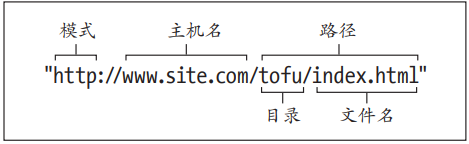

重置浏览器大小。当浏览器窗口宽度小于300像素时，背景颜色会变成淡蓝，否则是淡绿色。
布尔属性 required 代表用户必须填写该输入框。布尔属性不需要属性值，如果一定要加上属性值，则写作 required="required"©(版权符号)
。每个../都表示“到当前文件的上一层”，因此，../../会向上走两级，../../../ 会向上走三级。
一个网页主要由三种成分构成：文本
内容、对其他文件的引用和标记。
HTML 标记由元素、属性和值构成。
通常全部使用小写字母编写 HTML
（DOCTYPE 是一个例外），用引号包住
属性值。
为文件和文件夹命名时全部采用小写
字母，词与词之间用短横线分隔，而
不要用空格或者下划线。
始 终 用 下 面 的 DOCTYPE 声 明 开 始
HTML 文档，让浏览器知道这是一个
HTML5 页面。
页面内容都在 body 元素中。主要为浏
览器和搜索引擎准备的指令位于 body
元素之前，在 head 元素中。
用语义化 HTML 标记内容，不关心它
在浏览器中显示的样式。
语义化HTML提升了网站的可访问性，
让网站更有效率，并使网站维护和添
加样式变得更容易。
CSS 控制 HTML 内容的表现。
每个浏览器自带的样式表规定 HTML
的默认表现样式。开发人员可以使用
自己写的 CSS 覆盖这些规则。